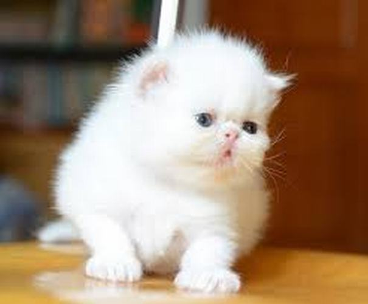
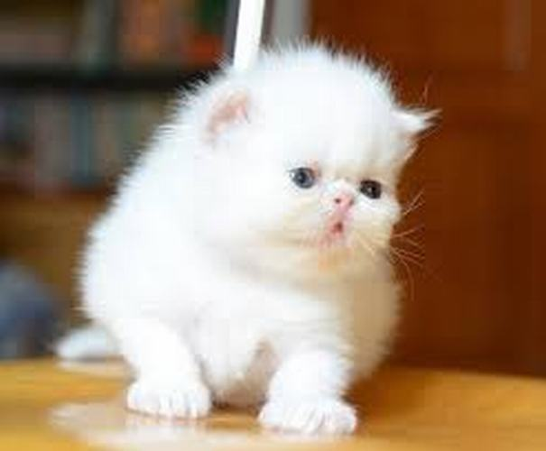

Nguồn gốc
Mèo Ba Tư là một giống được nuôi rất phổ biến bởi sự đáng yêu, ôn hòa thích gần gũi chủ của chúng. Sở hữu một bộ lông lông dài và dày 2 lớp, trông chúng như những cục bông gòn di động.
Mô tả
Tuy nhiên, ưu điểm này cũng chính là nhược điểm của mèo Ba Tư, vì lông của chúng rụng khá nhiều, là trở ngại khá lớn nếu bạn không có nhiều thời gian rảnh cũng như thuộc tuýp người ưa sạch sẽ.
Chi tiết
Một trong những đặc điểm dễ dàng nhận dạng mèo Ba Tư chính là chúng có một sống mũi rất ngắn nhờ vậy Mèo Ba Tư còn được biết đến với tên gọi là mèo mặt tịt. Vì mũi ngắn và gãy nên sẽ gặp nhiều khó khăn trong việc hít thở hoặc bị chảy nước mắt. Vì vậy, cần phải bạn cần cân nhắc kỹ nếu muốn nhận nuôi một chú mèo thuộc giống này.